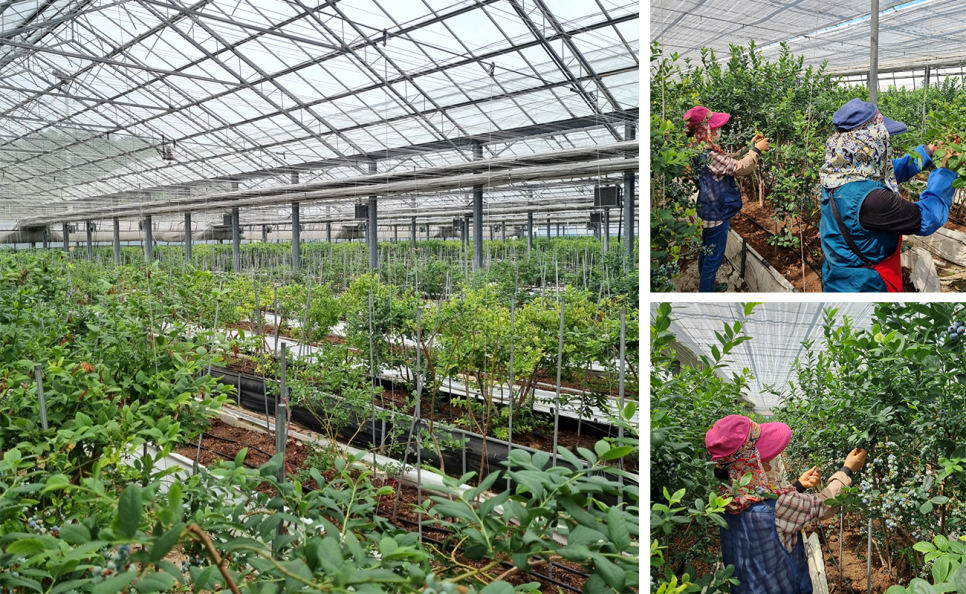
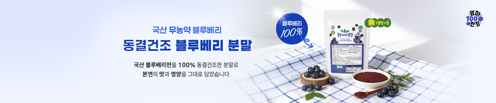

전라남도 화순 · 영글어농장
우리 땅에서 기른 정성,
우리 땅에서 기른 정성,
더 넓은 식탁으로.
01 / ROOTS
2008년, 화순에서
블루베리를 재배하며 농장의 기반을 다졌습니다.
02 / FARM TO FOOD
재배와 식품 가공
신선 농산물부터 과일칩, 분말과 과즙까지.
03 / NEW POSSIBILITIES
농산물의 새로운 쓰임
현미와 버섯을 연결하는 보위강 버섯쌀.
ABOUT YOUNG GROWER FARM
농업의 가치를 믿고,
농업의 가치를 믿고,
다음 가능성을 기릅니다.
영글어농장은 전남 화순의 농업회사법인입니다. 과학적인 재배와 농산물 가공을 바탕으로, 정성껏 기른 작물이 일상 속 다양한 먹거리로 이어지도록 노력합니다.
우리의 생각

OUR COLLECTION
농장에서 시작해
농장에서 시작해
일상에 닿는 먹거리
원물의 신선함부터 간편하게 즐기는 가공품까지.
영글어농장의 대표 제품군을 소개합니다.


FROM CROPS TO EVERYDAY FOOD
같은 농산물,
같은 농산물,
더 다양한 즐거움
블루베리는 생과와 과즙, 분말로.
현미와 버섯은 밥과 간식으로 이어집니다.

2008
화순 귀농과 블루베리 재배 시작
2025
농식품부 민간투자 기반 스케일업 지원사업 선정
2026
‘혁신 프리미어 1000’ 환경·스마트 농축수산 분야 선정
NEWS & STORIES
기업 소식 더 보기
농장에서 전하는 이야기


BUSINESS & CONTACT
유통·납품 상담